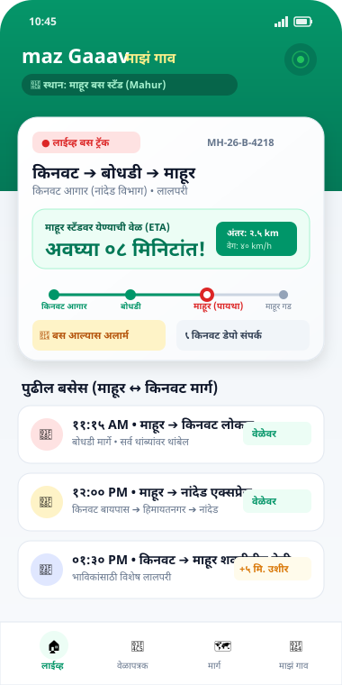
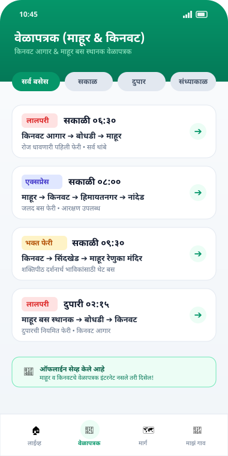
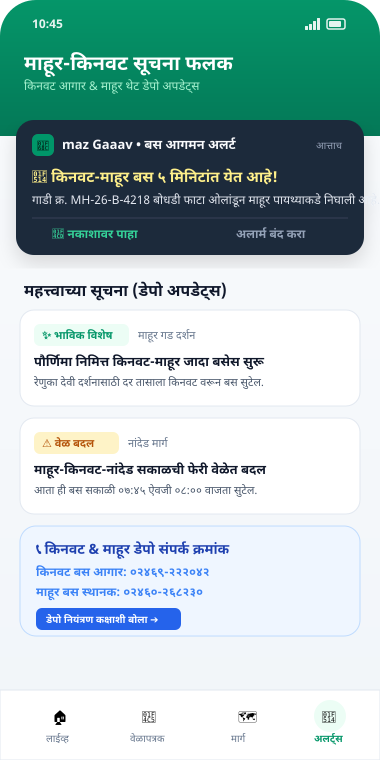

maz Gaaav (माझं गाव) ॲप खास माहूर बस स्थानक आणि किनवट बस आगार परिसरातील प्रवाशांसाठी आणि भाविकांसाठी तयार केले आहे. माहूर, किनवट, बोधडी, इस्लापूर आणि परिसरातील सर्व एसटी बसेसचे आगमन वेळ आणि रोजचे वेळापत्रक आता एका क्लिकवर पहा!
कॅमेरा किंवा Google Lens ने स्कॅन करून थेट मोबाईलमध्ये APK डाऊनलोड करा.
📥 QR कोड इमेज सेव्ह करा (पोस्टरसाठी)


👆 वरील बटणे दाबून माहूर & किनवट ॲपचे स्क्रीन तपासा
माहूर तीर्थक्षेत्राचे भाविक, किनवटचे प्रवासी, विद्यार्थी आणि स्थानिक नागरिकांच्या सोयीसाठी.
किनवट आगार आणि माहूर बस स्थानकावर बस किती वाजता पोहोचेल याची अचूक मिनिटांची माहिती मिळते.
माहूर ↔ किनवट, बोधडी, नांदेड, यवतमाळ, आणि शक्तिपीठ दर्शन फेऱ्यांचे संपूर्ण अधिकृत वेळापत्रक.
किनवट-माहूर मार्गावर किंवा जंगलाच्या पट्ट्यात मोबाईल रेंज नसली तरी आधी सेव्ह केलेले वेळापत्रक विनाइंटरनेट उघडते.
बस गावात किंवा बस स्टँडवर पोहोचायला ५ मिनिटे असताना मोबाईलमध्ये रिंग वाजून नोटीफिकेशन येते.
किनवट आगार व्यवस्थापक, माहूर बस स्थानक चौकशी कक्ष व नियंत्रण कक्षाचे अधिकृत संपर्क क्रमांक थेट ॲपमध्ये उपलब्ध.
मोठ्या आणि सुटसुटीत अक्षरात संपूर्ण माहिती अस्सल मराठी भाषेत असल्यामुळे गावातील सर्वजण सहज वापरू शकतात.
ॲपमध्ये माहूर आणि किनवट बस स्टॉपची माहिती कशी दिसते ते पहा:
माहूर स्टँडवर बस किती मिनिटांत पोहोचेल हे दाखवणारा होम स्क्रीन.
सकाळ, दुपार आणि संध्याकाळच्या सर्व एसटी फेऱ्यांची यादी.
दर्शन विशेष बसेस, वेळेतील बदल आणि थेट डेपो फोन नंबर.
खालील सोप्या स्टेप्स फॉलो करून १ मिनिटात ॲप सुरू करा:
वर दिलेले Download APK बटण दाबा किंवा QR कोड तुमच्या मोबाईलने स्कॅन करा. APK फाईल थेट डाऊनलोड होईल.
ब्राउझरवर "File might be harmful" असा इशारा दिसल्यास "Download anyway" दाबा. त्यानंतर Settings ➔ Allow from this source ला परवानगी द्या.
डाऊनलोड पूर्ण झाल्यावर नोटीफिकेशनवर टॅप करा आणि 'Install' दाबा. ॲप उघडून माहूर किंवा किनवट बस स्टॉपची वेळ पाहायला सुरुवात करा!
जेव्हा तुम्ही थेट वेबसाईटवरून कोणतीही ॲप (.apk) डाऊनलोड करता, तेव्हा ॲन्ड्रॉईड सुरक्षा सूचना दाखवतो. maz Gaaav हे पूर्णपणे सुरक्षित, जाहिरात-मुक्त आणि अधिकृत ॲप आहे. तुम्ही बिनधास्तपणे इन्स्टॉल करू शकता.
माहूर आणि किनवट प्रवाशांनी विचारलेले महत्त्वाचे प्रश्न आणि त्यांची उत्तरे.
सध्या या ॲपमध्ये माहूर बस स्थानक (Mahur) आणि किनवट बस आगार (Kinwat), तसेच बोधडी व परिसरातील सर्व बसेस आणि फेऱ्यांची माहिती उपलब्ध आहे.
नाही! maz Gaaav हे ॲप सर्व प्रवाशांसाठी, भाविकांसाठी आणि गावकऱ्यांसाठी १००% मोफत आहे.
होय! ॲपमध्ये ऑफलाईन मोड दिलेला आहे. एकदा वेळापत्रक पाहिले की इंटरनेट नसतानाही तुम्ही किनवट व माहूरच्या बसच्या वेळा पाहू शकता.
तुमच्या मोबाईलचा कॅमेरा किंवा Google Lens उघडा आणि वरील QR कोडवर धरा. स्क्रीनवर येणाऱ्या लिंकवर टॅप करताच ॲप डाऊनलोड सुरू होईल.
आजच 'maz Gaaav' ॲप डाऊनलोड करा आणि तुमच्या प्रवासाची अचूक वेळ जाणून घ्या.